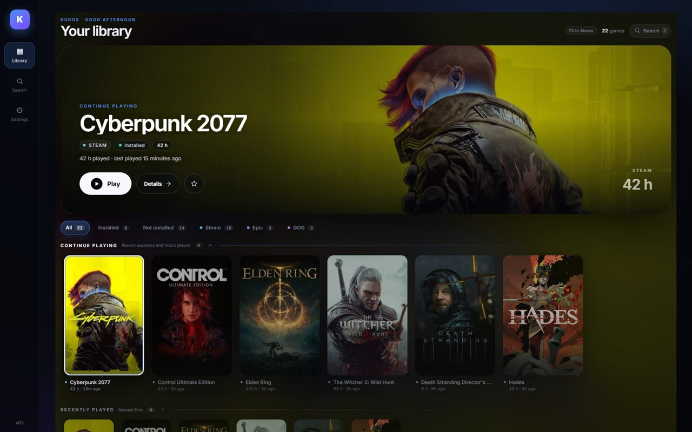
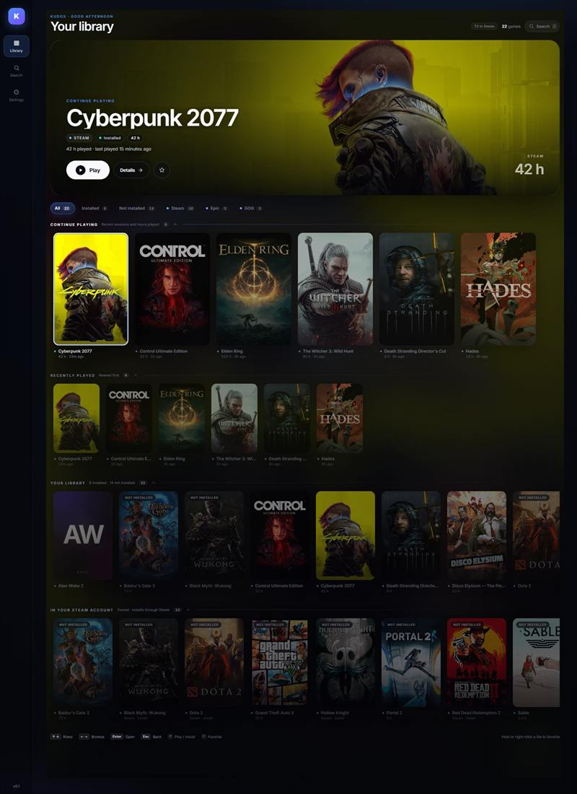
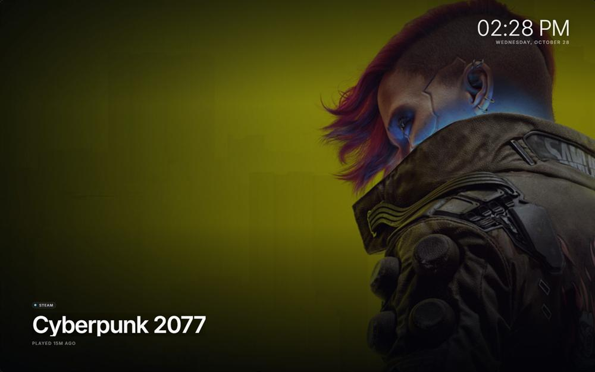
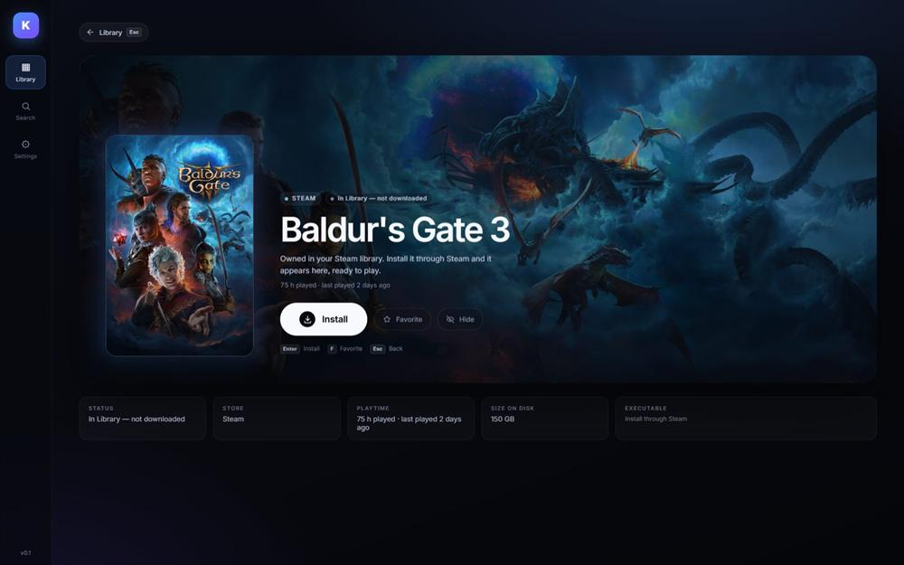
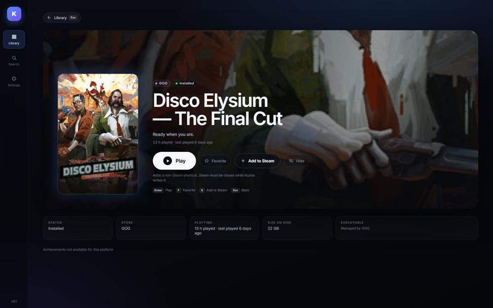

One unified library
Steam, Epic and GOG in one PS5-style home. Installed games, owned Steam titles, playtime, search and favorites live in the same place.
Optional, in development: complete owned library via Steam Web API.Windows 10/11 · local-first
Kudos brings Steam, Epic and GOG together in a controller-first, PS5-style launcher. No account. No telemetry. Just the games you already own.

Built for the couch
A quiet, fast shell around the store clients you already use. Keyboard and controller welcome; mouse optional.
Steam, Epic and GOG in one PS5-style home. Installed games, owned Steam titles, playtime, search and favorites live in the same place.
Optional, in development: complete owned library via Steam Web API.Xbox, PlayStation and Nintendo layouts, with automatic detection and a manual override. Navigate rows, cycle filters, open the side rail and launch a game without touching the keyboard.
Keyboard and mouse always work too.Leave the library alone and Kudos turns into a calm full-screen display: hero art, clock and a gentle crossfade. On by default after one minute.
Pauses when unfocused. Any input returns to the library.Optional SteamGridDB art for GOG and non-Steam games. Pick a grid, hero, logo or icon; Kudos caches it and writes it into Steam's grid folder for the shortcut.
In development: needs a SteamGridDB key and a non-Steam shortcut.A closer look
Rows, owned titles, install actions and an ambient mode that gets out of the way.




Ready when you are
Download the latest Windows build from GitHub Releases. Free, local-first and built with Tauri, Rust and Svelte.
Download for WindowsHonest by default
Kudos is deliberately small. These are the edges worth knowing before you download.
Both scanners have unit tests and committed fixtures, but neither client is installed on the development machine. A real-client mismatch is a bug worth reporting.
There is no code-signing certificate yet, so Windows SmartScreen may warn on first run. Download only from the official GitHub releases page.
Counts come from local Steam stats files. Epic and GOG titles show that achievements are not available for their platform; no Web API or key is involved.
Optional add-ons are never required. The Steam Web API and SteamGridDB cards are included in v0.2.0 and stay empty until you paste a key. The core library works without either.